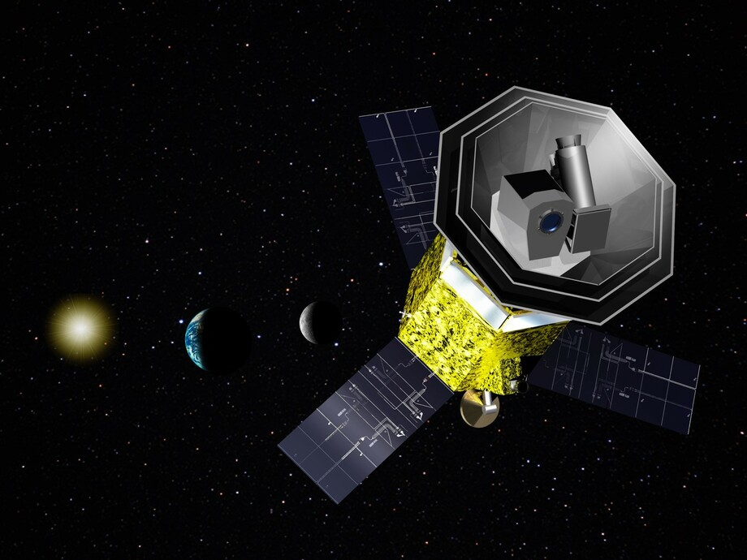
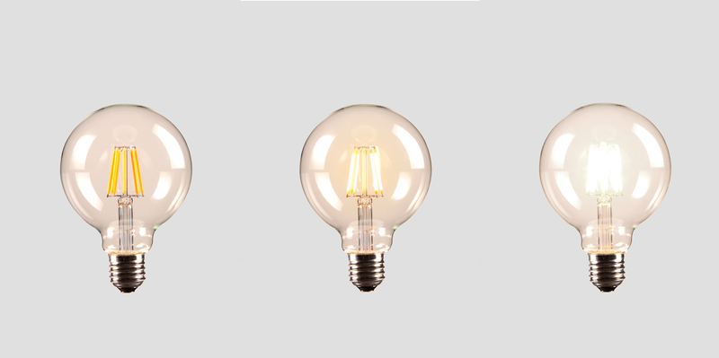
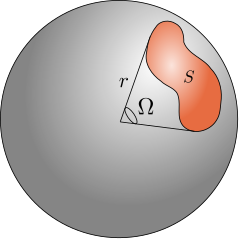
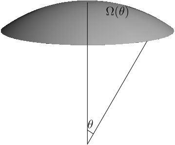

Chi sono
- Professore presso il dipartimento di Fisica
- Mi occupo di cosmologia osservativa (CMB)
- Metodi computazionali e machine learning
Obbiettivi del corso
- Come tradurre un modello fisico in un codice numerico?
- Come scrivere codice ben strutturato e documentato?
- Come generare immagini fotorealistiche?
È un corso multidisciplinare: non riservato a cosmologi e astrofisici!
Obbiettivi del corso
- Come tradurre un modello fisico in un codice numerico?
- Come scrivere codice ben strutturato e documentato?
- Come generare immagini fotorealistiche?
È un corso multidisciplinare: non riservato a cosmologi e astrofisici!
Soluzioni numeriche

Utilità delle simulazioni

Planck: missione spaziale ESA (2009–2013)
Utilità delle simulazioni

Assemblaggio della sonda nei laboratori ESA
Utilità delle simulazioni

Utilità delle simulazioni

Utilità delle simulazioni

LiteBIRD (in fase di progettazione)
Obbiettivi del corso
- Come tradurre un modello fisico in un codice numerico?
- Come scrivere codice ben strutturato e documentato?
- Come generare immagini fotorealistiche?
Repository pubblici

Elenco di modifiche

Test automatici

Tracciamento di bug

Lavoro in team

Obbiettivi del corso
- Come tradurre un modello fisico in un codice numerico?
- Come scrivere codice ben strutturato e documentato?
- Come generare immagini fotorealistiche?
Generazione di immagini

Vivian Maier, Autoritratto (1926–2009)
Oceania (R. Clements, J. Musker, D. Hall, C. Williams, 2016)
«Cornell box»

«Cornell box»

Bibliografia
- Physically Based Rendering: from Theory to Implementation (M. Pharr, W. Jakob, G. Humphreys, terza ed.): molto complesso e completo, è il testo di riferimento in materia. È disponibile online.
- Advanced Global Illumination (P. Dutré, K. Bala, P. Bekaert, seconda ed.): lo useremo soprattutto per le parti più «fisiche».
- Realistic Ray Tracing (P. Shirley, R. K. Morley, seconda ed.): molto antiquato, è utile soprattutto come testo introduttivo.
Propagazione della luce
- Ottica quantistica (non usata nella computer graphics)
- Modello ondulatorio (diffrazione, es. bolle di sapone)
- Ottica geometrica
(v. Dutré, Bala, Bekaert)
Ottica geometrica
- La luce si propaga lungo linee rette (geodesiche)
- La velocità della luce è assunta infinita
- Propagazione non influenzata da effetti gravitazionali o magnetici
Perché ci serve la radiometria?
In questo corso dovremo trattare la radiometria, ossia la scienza che studia come la radiazione si propaga in un mezzo.
Ciò che è importante è avere quantità che caratterizzano la radiazione in maniera il più possibile indipendente da strumenti che la misurano.
Quantità radiometriche
- Energia emessa
- Potenza radiante, o flusso
- Irradianza, emettenza radiante
- Radianza (← il cuore del corso!)
Energia emessa
- Si misura in Joule
- È legata alla luminosità intrinseca di un oggetto, ad es. una lampadina.
- Ma una lampadina può emettere molta energia sia perché è «potente» sia perché resta accesa a lungo: conoscere solo l’energia emessa non consente quindi di stabilire come un emettitore appare.

Flusso
- Energia che attraversa una superficie A nell’unità di tempo: \Phi
- [\Phi] = \mathrm{W}.
- Esempio: A è la superficie di un rivelatore, come la pupilla umana o l’obbiettivo di una fotocamera.
- Più è grande la superficie A, maggiore è \Phi.

Irradianza/emettenza
- Flusso \Phi normalizzato sulla superficie:
I, E = \frac{\mathrm{d}\Phi}{\mathrm{d}A},
\qquad [I] = \mathrm{W}/\mathrm{m}^2.
- Irradianza I: ciò che cade su \mathrm{d}A; emettenza E: ciò che abbandona \mathrm{d}A

Radianza
- Ciò che ci interessa!
- Flusso \Phi normalizzato sulla superficie proiettata per unità di angolo solido:
L = \frac{\mathrm{d}^2\Phi}{\mathrm{d}\Omega\,\mathrm{d}A^\perp}
= \frac{\mathrm{d}^2\Phi}{\mathrm{d}\Omega\,\mathrm{d}A\,\cos\theta},
\qquad [L] = \mathrm{W}/\mathrm{m}^2/\mathrm{sr}.
- Come l’irradianza e l’emettenza, la radianza è funzione del punto \mathbf{x} della superficie \mathrm{d}A:
L = L(\mathbf{x}).
Proprietà della radianza
- Il rapporto sull’angolo solido rimuove la dipendenza dalla distanza
- La presenza di \cos\theta rimuove la dipendenza dall’orientamento di \mathrm{d}A.
Cos’è un angolo solido? (1/2)
Cos’è un angolo solido? (2/2)
Nel caso di una sfera, non abbiamo a che fare con lunghezze bensì superfici:

Steradiante: angolo per cui la superficie S è r^2.
Proprietà degli angoli solidi
- Una sfera di raggio r sottende un angolo solido di 4\pi, perché S = 4\pi r^2.
- Una semisfera sottende un angolo solido di 2\pi.
- Un angolo solido \Omega sottende sulla sfera una superficie \Omega r^2.
Proprietà degli angoli solidi
Calcoliamo l’angolo solido \Omega(r):

\mathrm{d}\Omega = \sin\theta\,\mathrm{d}\theta\,\mathrm{d}\phi
\Omega(r) = \int_0^\theta \int_0^{2\pi} \mathrm{d}\Omega = 2\pi(1 - \cos\theta).
Angoli solidi e distanza

\Omega(d) = 2\pi(1 - \cos\theta) =
2\pi\left(1 - \frac{d}{\sqrt{r^2 + d^2}}\right) \approx \pi \left(\frac{r}d\right)^2 \text{se\ } r \ll d.
Angoli solidi e distanza

- Dato che I \propto A^{-1} \propto d^{-2}, l’irradianza su \mathrm{d}A a 3d è 1/9 di quella a d
- Ma \mathrm{d}\Omega = dA/d^2 \propto d^{-2}
- Quindi L \propto I/\mathrm{d}\Omega non dipende da d
Radianza

La presenza di \cos\theta permette di rimuovere la dipendenza dall’orientamento della superficie \mathrm{d}A.
Notazione per la radianza
Useremo spesso la notazione
L(\mathbf{x} \rightarrow \Theta)
per indicare la radianza che abbandona una superficie nel punto \mathbf{x} verso la direzione \Theta, a cui è associato un angolo solido \mathrm{d}\Omega. Analogamente,
L(\mathbf{x} \leftarrow \Theta)
è la radianza proveniente dalla direzione \Theta che incide sulla superficie in \mathbf{x}.
Spettri di emissione
Ciascuna delle quantità viste finora può essere riferita a un intervallo di lunghezze d’onda. Diverse sorgenti luminose hanno infatti spettri differenti:

Radianza spettrale
Dalla radianza L(\mathbf{x} \leftrightarrow \Theta) si può definire la radianza spettrale L_\lambda(\mathbf{x} \leftrightarrow \Theta), che fa riferimento all’intervallo di lunghezze d’onda [\lambda, \lambda + \mathrm{d}\lambda] e indichiamo con la stessa lettera L per comodità. È definita tramite l’equazione
L(\mathbf{x} \leftrightarrow \Theta) =
\int_0^\infty L_\lambda(\mathbf{x} \leftrightarrow \Theta)\,\mathrm{d}\lambda,
\quad
[L_\lambda(\mathbf{x} \leftrightarrow \Theta, \lambda)] = \mathrm{W}/\mathrm{m}^2/\mathrm{sr}/\mathrm{m}.
Proprietà di L
Da L si possono ricavare \Phi, I, E. Ad esempio:
\Phi = \iint_{A, \Omega} L(\mathbf{x} \rightarrow \Theta)\,
\cos\theta\,\mathrm{d}\Omega\,\mathrm{d}A_\mathbf{x},
In assenza di attenuazione vale che L(\mathbf{x} \rightarrow \mathbf{y}) = L(\mathbf{x} \rightarrow \mathbf{z}), se \mathbf{x}, \mathbf{y}, \mathbf{z} sono sulla stessa retta; vale lo stesso per L_\lambda, ovviamente.
Il fatto che L e L_\lambda non dipendano dalla distanza implica che il colore percepito di un oggetto alla distanza d non cambia al variare di d.
Utilità di L
L è ciò che viene misurato da qualsiasi sensore (telecamera, occhio umano) sensibile alla luce.

Utilità di L_\lambda
Il comportamento di L_\lambda al variare di \lambda permette di stimare il colore (hue):

(Esiste anche un terzo parametro, la saturazione, che tratteremo a breve.)
Creazione di immagini
Stimare L e L_\lambda insieme consente di produrre un’immagine a colori:

Esempio
Consideriamo un emettitore diffuso, un oggetto che emette luce uniformemente in tutte le direzioni:

In questo caso,
L(\mathbf{x} \rightarrow \Theta) = L_e\qquad\text{(costante)}.
Calcolo del flusso
\begin{aligned}
\Phi &= \iint_{A, \Omega} L(\mathbf{x} \rightarrow \Theta)\,\cos\theta\,\mathrm{d}\Omega\,\mathrm{d}A =\\
&= \iint_{A, \Omega} L_e\,\cos\theta\,\mathrm{d}\Omega\,\mathrm{d}A =\\
&= L_e \int_A \mathrm{d}A \int_\Omega \cos\theta\,\mathrm{d}\Omega =\\
&= L_e \int_A \mathrm{d}A \int_0^{2\pi}\mathrm{d}\phi \int_0^{\pi/2}\mathrm{d}\theta \cos\theta\,\sin\theta =\\
&= \pi A L_e.\\
\end{aligned}
Interazione luce/superficie
«Cornell box»

La BRDF
La Bidirectional Reflectance Distribution Function (BDRF), indicata con f_r(x, \Psi \rightarrow \Theta), è il rapporto tra la radianza che abbandona una superficie lungo \Theta rispetto all’emittanza ricevuta da una direzione \Psi:
\begin{aligned}
f_r(x, \Psi \rightarrow \Theta) &= \frac{\mathrm{d}L (x \rightarrow \Theta)}{\mathrm{d}E(x \leftarrow \Psi)} = \\
&= \frac{\mathrm{d}L (x \rightarrow \Theta)}{
L(x \leftarrow \Psi) \cos(N_x, \Psi)\,\mathrm{d}\omega_\Psi
},
\end{aligned}
dove \cos(N_x, \Psi) è l’angolo tra la normale della superficie \mathrm{d}A e la direzione incidente \Psi.
La BRDF

Significato della BRDF
- Descrive come una superficie interagisce con la luce;
- f_r \propto \cos^{-1}(N_x, \Psi): si tiene conto dell’inclinazione della sorgente luminosa rispetto a \mathrm{d}A.
- f_r : \mathbb{R}^2 \times \mathbb{R}^2 \rightarrow \mathbb{R} (per codificare una direzione sono necessari due numeri), ma nel caso più generale dipende anche da \lambda e dal tempo t;
- È una funzione positiva: f_r \geq 0, e la sua unità di misura è 1/\mathrm{sr};
- È definita su tutto l’angolo solido 4\pi, perché viene usata anche per modellare superfici (semi-)trasparenti.
- Assume che la luce abbandoni la superficie dallo stesso punto x in cui l’ha incontrata (non vero per subsurface scattering!).
Reciprocità di Helmholtz
Per la BRDF vale la reprocità di Helmholtz:
f_r(x, \Psi\rightarrow\Theta) = f_r(x, \Theta\rightarrow\Psi),
ossia, la BRDF non cambia se si scambiano la direzione entrante con quella uscente.
Si può dimostrare questa proprietà usando le equazioni di Maxwell, ma la dimostrazione è lunga e non particolarmente interessante per i nostri scopi.
Più angoli di incidenza
Grazie al principio di sovrapposizione dei campi e.m., se si hanno più sorgenti luminose i=1\ldots N che insostono su una superficie, è sufficiente sommare le componenti:
\begin{aligned}
\mathrm{d}L_i(x \rightarrow \Theta) &= f_r(x, \Psi_i \rightarrow \Theta) \mathrm{d}E(x \leftarrow \Psi_i) =\\
&= f_r(x, \Psi_i \rightarrow \Theta) L(x \leftarrow \Psi_i)\,\cos(N_x, \Psi_i)\,\mathrm{d}\omega_{\Psi_i},\\
L_\text{tot}(x \rightarrow \Theta) &= \int_{\Omega_x} f_r(x, \Psi \rightarrow \Theta) L(x \leftarrow \Psi)\,\cos(N_x, \Psi)\,\mathrm{d}\omega_\Psi.
\end{aligned}
Utilità della BRDF

Superficie diffusiva ideale
Tutta la radiazione incidente viene distribuita sulla semisfera 2\pi, così la BRDF è costante:
f_r(x, \Psi \rightarrow \Theta) = \frac{\rho_d}\pi,
dove 0 \leq \rho_d \leq 1 è la frazione di energia incidente che viene riflessa.
Superficie riflettente
In questo caso f_r è una Delta di Dirac, ossia identicamente nulla tranne nella direzione uscente R data dalla legge di riflessione:
R = 2(N \cdot \Psi) N - \Psi,
dove N è il vettore normale (tangente) alla superficie.
Superficie rifrattiva
È simile al caso precedente, ma è nulla in corrispondenza dell’angolo dato dalla legge di Snell
\eta_1 \sin\theta_1 = \eta_2 \sin\theta_2,
dove \eta_1 ed \eta_2 sono gli indici di rifrazione, e \theta_1 e \theta_2 gli angoli rispetto alla normale della superficie della direzione incidente e trasmessa.
La BRDF in questo caso deve però tenere conto della possibile riflessione totale, che avviene se l’angolo di incidenza è maggiore di \arcsin \eta_2/\eta_1 (angolo di Brewster).
Altre BRDF
Superficie di Fresnel: parte della luce viene riflessa e parte rifratta, secondo le equazioni di Fresnel.
Superficie di Phong: cerca di modellare una superficie in maniera semi-empirica. Molto popolare in passato, non è molto usata oggi perché non plausibile fisicamente (non conserva l’energia).
Superficie di Ward: un modello semi-empirico più sofisticato di Phong.
Esistono online librerie di BRDF, solitamente ricavate da misure in laboratorio.
L’equazione del rendering
Esempi banali
Assenza di radiazione: in questo caso L_e = 0 e \forall\Psi: L(x \leftarrow \Psi) = 0, quindi
L = 0.
È una scena perfettamente buia: molto poco interessante!
Se un punto emette radiazione isotropa con radianza L_e in x_0, allora in ogni altro punto x dello spazio vale che
L(x_0 \rightarrow \Theta) = L_e
Tutto lo spazio è riempito dalla medesima radianza: poco interessante!
Esempio più complesso
Piano infinito diffusivo ideale e non emettente (L_e = 0) e una sferetta di raggio r a una distanza d \gg r dal piano che emette isotropicamente con radianza L_d.

Esempio più complesso
Dato un punto x sul piano, vale che:
L(x \rightarrow \Theta) = \int_{2\pi} \frac{\rho_d}\pi\,L(x \leftarrow \Psi)\,\cos(N_x, \Psi)\,\mathrm{d}\omega_\Psi.
Già qui le cose si complicano! Qual è il valore di L(x \leftarrow \Psi)? (No, non è L_d!)
Radianza entrante
Il valore di L(x \leftarrow \Psi) è nullo, tranne quando \Psi punta verso la sorgente luminosa. Dividiamo il dominio dell’integrale:
\int_{2\pi} = \int_{\Omega(d)} + \int_{2\pi - \Omega{d}},
dove \Omega(d) è l’angolo solido della sfera alla distanza d. Il secondo integrale è nullo, perché su quell’angolo solido L(x \leftarrow \Psi) = 0.
Radianza entrante
L’integrale sull’angolo solido \Omega(d) è semplice se supponiamo che nel dominio sia d che l’angolo \theta tra N_x e \Psi siano costanti (la sfera è piccola):
L(x \rightarrow \Theta) = \int_{\Omega(d)} \frac{\rho_d}\pi\,L_d\,\cos(N_x, \Psi)\,\mathrm{d}\omega_\Psi \approx \frac{\rho_d}\pi\,L_d\,\cos\theta \times \pi\left(\frac{r}d\right)^2,
dove \theta è l’angolo tra la normale e la direzione della sferetta.
Proprietà della soluzione
- L(x \rightarrow \Theta) \approx \rho_d\,L_d\,\cos\theta\,\left(\frac{r}d\right)^2.
- Anche se il punto emette isotropicamente e la superficie è diffusiva ideale, c’è comunque una dipendenza dal coseno di \theta.
- La radianza riflessa è proporzionale alla superficie della sfera (\propto r^2).
- All’aumentare di d, la radiazione emessa dal piano diminuisce come d^{-2}.
Doppio piano
Supponiamo ora di avere due piani diffusivi ideali:

Come si tratta questo caso?
Doppio piano
Consideriamo ancora il piano sottostante. Vale che:
L_\text{down}(x \rightarrow \Theta) = \int_{\Omega_x} \frac{\rho_d}\pi\,L(x \leftarrow \Psi)\,\cos(N_x, \Psi)\,\mathrm{d}\omega_\Psi.
Ma ora l’integrale non è più una semplice delta di Dirac: oltre alla sferetta c’è il piano superiore. Qual è il valore di L_\text{up}(x \leftarrow \Psi) prodotto dal piano superiore?
Doppio piano
Il valore di L(x \leftarrow \Psi) causato da una direzioneper il piano superiore si calcola con la stessa formula della slide precedente:
L_\text{up}(x \rightarrow \Theta) = \int_{\Omega_x} \frac{\rho_d}\pi\,L(x \leftarrow \Psi)\,\cos(N_x, \Psi)\,\mathrm{d}\omega_\Psi.
Ma così ci invischiamo in un problema ricorsivo!
Il problema generale
Nel caso generale avviene che l’integrale da calcolare è multiplo:
L(x \rightarrow \Theta) = \int_{\Omega^{(1)}_x} \int_{\Omega^{(2)}_x} \int_{\Omega^{(3)}_x} \ldots
È un integrale a molte dimensioni (i termini successivi al primo sono sempre meno importanti e tendono a zero, quindi le dimensioni non sono infinite).
Il problema generale
- L’equazione del rendering è impossibile da risolvere analiticamente nel caso generale.
- Durante il corso studieremo modi per approssimarne la soluzione.
- Come detto nell’introduzione, il nostro scopo principale sarà imparare a programmare bene: la produzione di immagini realistiche sarà un sottoprodotto!
- Sempre definire in modo accurato le quantità misurabili (energia, flusso, radianza, etc.).
- Assicurarsi di studiare un modello fisico in casi semplici (spazio vuoto, sferetta e piano, sferetta e due piani, etc.), per capire il modello prima di usarlo.
- Il mondo è complicato!